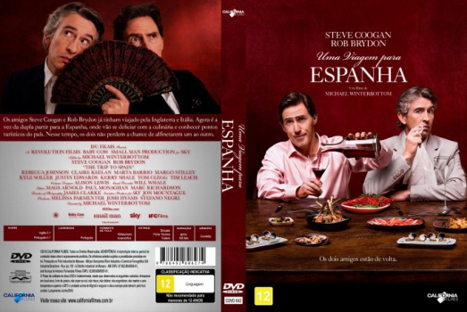

Uma Viagem para Espanha (2017)



Avaliação (TMDb):


6.4/10 (65 votos)
Avaliação (Usuário):
Outro Título:The Trip to Spain
País:United Kingdom, 115 minutos
Idiomas falados:Inglês, Português
Gênero(s):Comédia, Drama
Diretor(s):Michael Winterbottom
Codec:MPEG-2 (DVD)
Número: 3785
Sinopse:
Os amigos Steve Coogan e Rob Brydon já tinham viajado pela Inglaterra e Itália. Agora é a vez da dupla partir para a Espanha, onde vão se deliciar com a culinária e conhecer pontos turísticos do país. Nesse tempo, os dois não perdem a chance de alfinetarem um ao outro.
Elenco:
Steve Coogan, Rob Brydon, Marta Barrio, Claire Keelan, Tom Clegg, Justin Edwards, Kerry Shale, Kyle Soller, Margo Stilley, Rebecca Johnson
Tipo de mídia: DVD5,
Legendas: Português,
Alugado: Não
Tela: 1.78:1